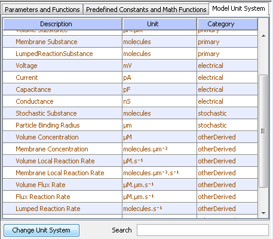

Model units establish the base system of measurement for VCell quantities. Some units can be changed (e.g. Time, Length, Diffusion, ...). Electrical units are fixed and cannot be changed (voltage mV, current pA, capacitance pF, conductance nS).

Change model units by clicking "Change Unit System". A dialog will appear allowing you to change unit definitions.